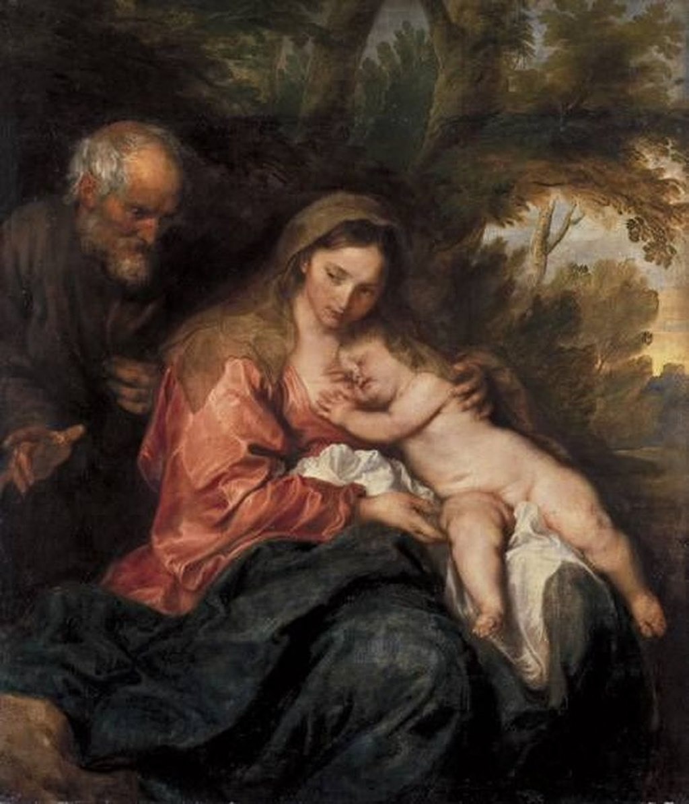

<head>
<meta charset="UTF-8" />
<meta name="keywords" content="drawing, painting" />
<meta name="description" content="drawings by Sunjy" />
<title>Sunjy</title>
<link rel="shortcut icon" type="image/x-icon" href="../../mImages/mCommon/favicon.ico" media="screen" />
<link rel="stylesheet" type="text/css" href="../../mCsses/mCommon/mCssA.css" />
<link rel="stylesheet" type="text/css" href="../../mCsses/mCommon/mCssB.css" />
<link rel="stylesheet" type="text/css" href="../../mCsses/mCommon/mCssC.css" />
<link rel="stylesheet" type="text/css" href="../../mCsses/mCommon/mCssD.css" />
<link rel="stylesheet" type="text/css" href="../../mCsses/mContent/mCssA.css" />
<link rel="stylesheet" type="text/css" href="../../mCsses/mContent/mCssB.css" />
<link rel="stylesheet" type="text/css" href="../../mCsses/mContent/mCssC.css" />
<link rel="stylesheet" type="text/css" href="../../mCsses/mContent/mCssD.css" />
</head>
<script type="text/javascript" src="../../mScripts/mContent/mContentAA.js" /></script>
<script type="text/javascript" src="../../mScripts/mContent/mContentAB.js" /></script>
<script type="text/javascript" src="../../mScripts/mContent/mContentAC.js" /></script>
<script type="text/javascript" src="../../mScripts/mContent/mContentAD.js" /></script>
<script type="text/javascript"></script> 
<script type="text/javascript">
document.write('<div class="mImgAbsolute"></div>');
/*
document.write('<p class="mFontSizeBColor" />From a white paper...</p>');
document.write('<table class="center"><tr><td>');
document.write('');
document.write('</td></tr></table>');
*/
</script>


<script type="text/javascript">
document.write('<p class="mFontSizeBColor" />The Rest on The Flight into Egypt</p>');
document.write('<p class="mFontSizeSColor" />“The Rest on The Flight into Egypt” by Anthony van Dyck depicts the Holy Family of Mary, Joseph, and the infant Jesus resting during their flight into Egypt.<br><br>The Holy Family is resting, and the focus of the composition is on the seated Virgin Mary breastfeeding the Christ Child, enthroned in front of a deep forest landscape background.<br><br>The theme of the “Rest on the Flight into Egypt” was a popular subject in art, and a layperson commissioned this painting for personal devotion.<br><br>The Flight into Egypt derives from the Gospel of Matthew, though it does not mention a rest, which derives from apocryphal accounts. It was a popular theme for painters in many periods.<br><br>The subject did not develop until the second half of the fourteenth century. It evolved based on the long-standing traditions of incidents that embellished the story of the Flight into Egypt.<br><br>The New Testament merely states that it happened, without giving any details.<br></p>');
document.write('<table class="center" /><tr><td>');
document.write('<br>The Holy Family is resting, and the focus of the composition is on the seated Virgin Mary breastfeeding the Christ Child, enthroned in front of a deep forest landscape background.<br><br>The theme of the “Rest on the Flight into Egypt” was a popular subject in art, and a layperson commissioned this painting for personal devotion.<br><br>The Flight into Egypt derives from the Gospel of Matthew, though it does not mention a rest, which derives from apocryphal accounts. It was a popular theme for painters in many periods.<br><br>The subject did not develop until the second half of the fourteenth century. It evolved based on the long-standing traditions of incidents that embellished the story of the Flight into Egypt.<br><br>The New Testament merely states that it happened, without giving any details.<br>" />');
document.write('</td></tr></table>');
</script>


